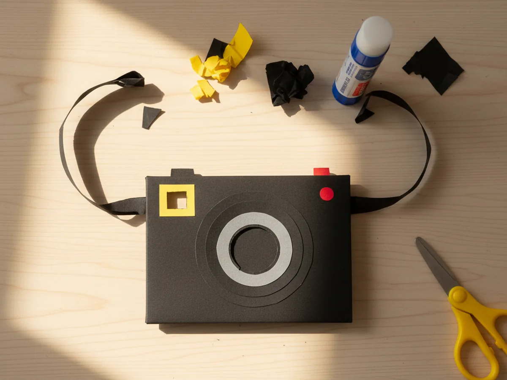
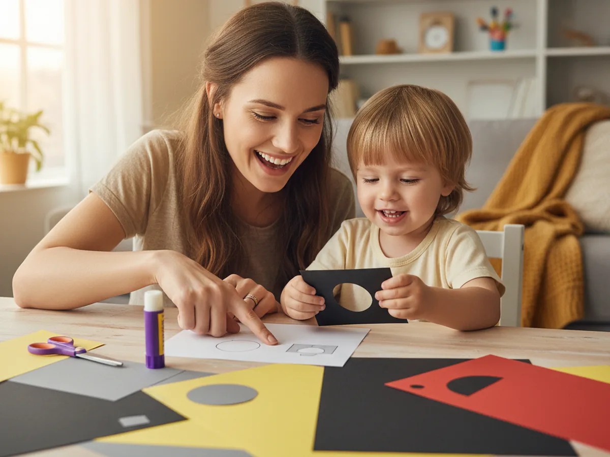
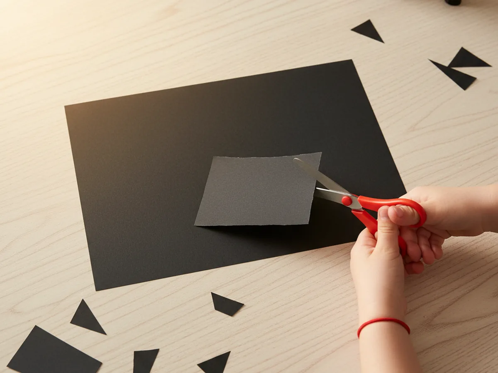
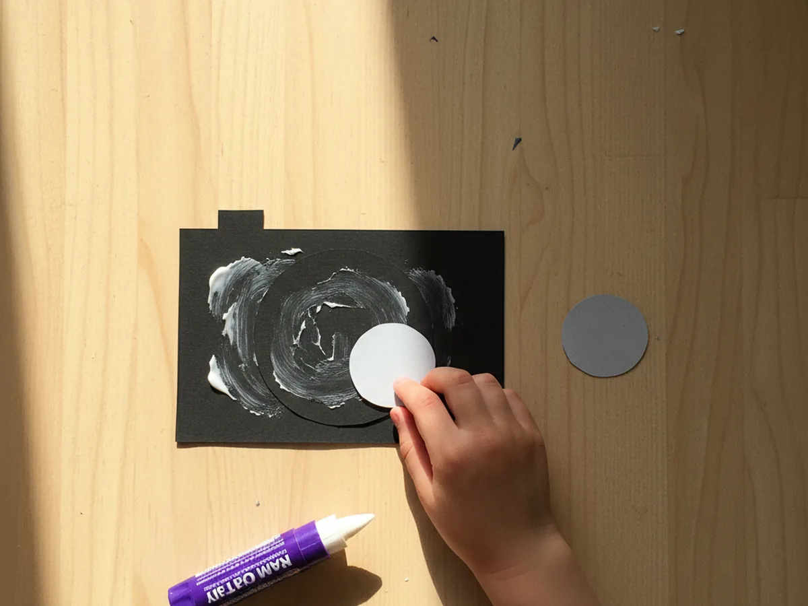
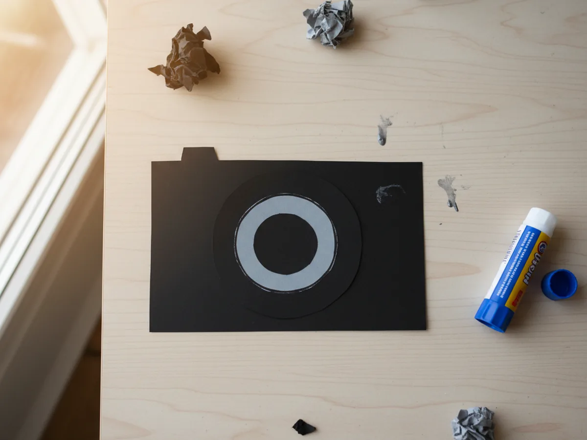
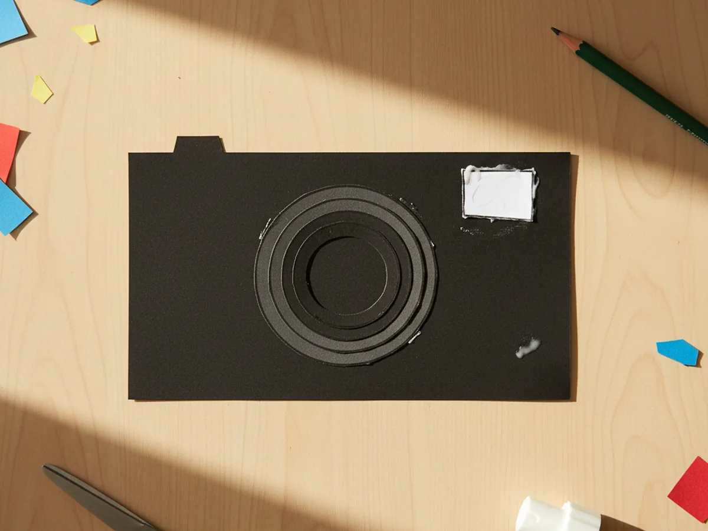
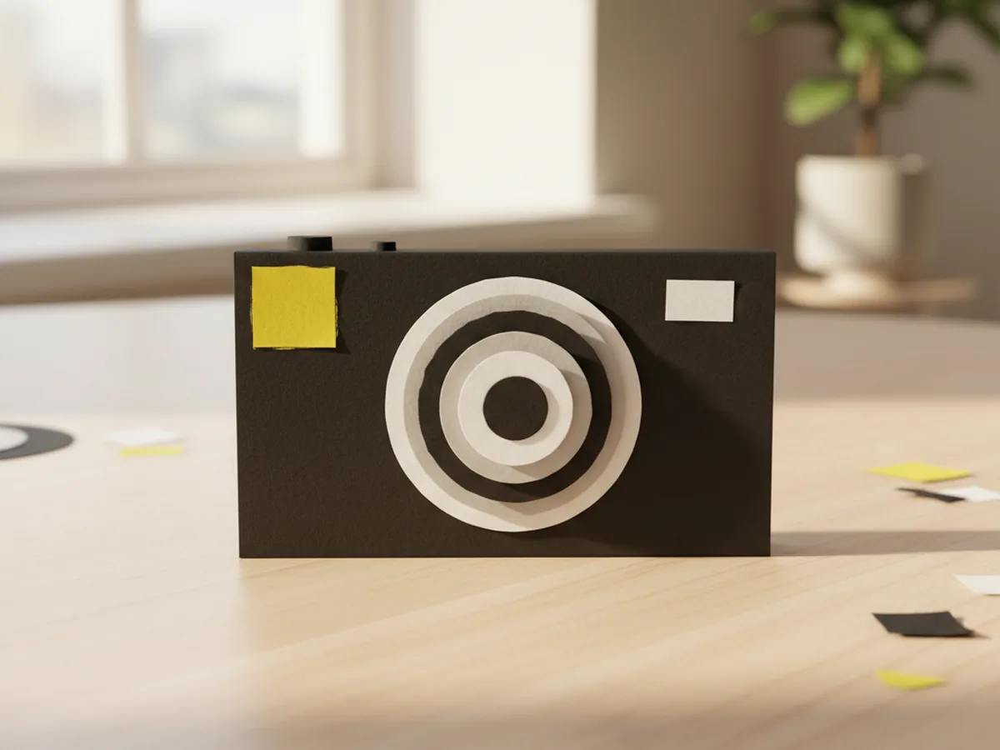
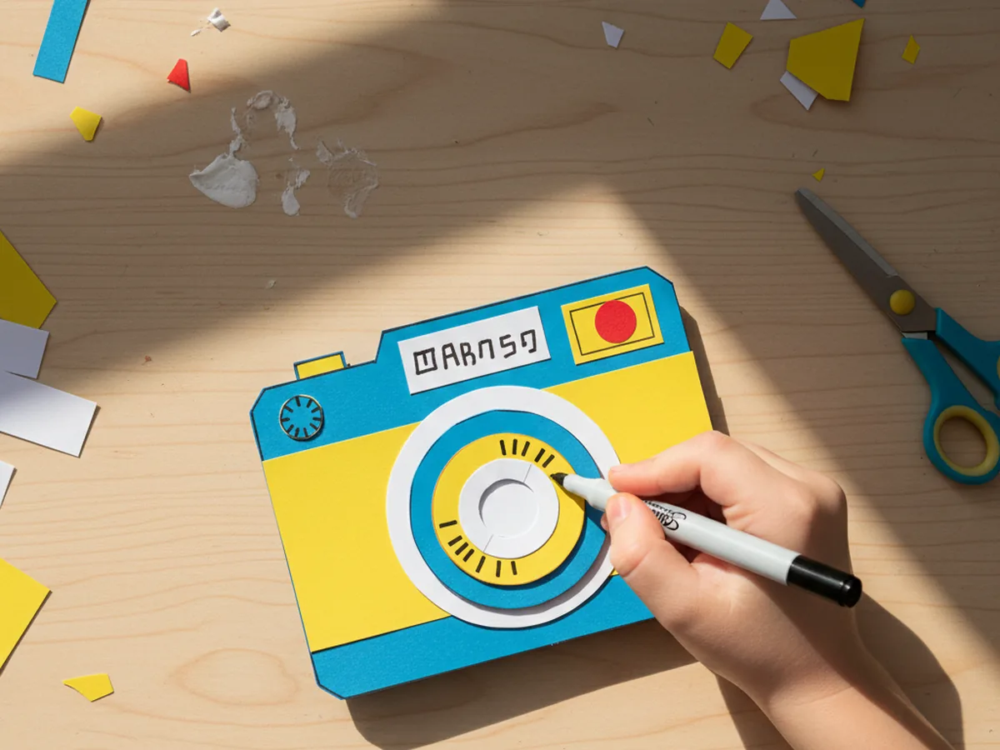
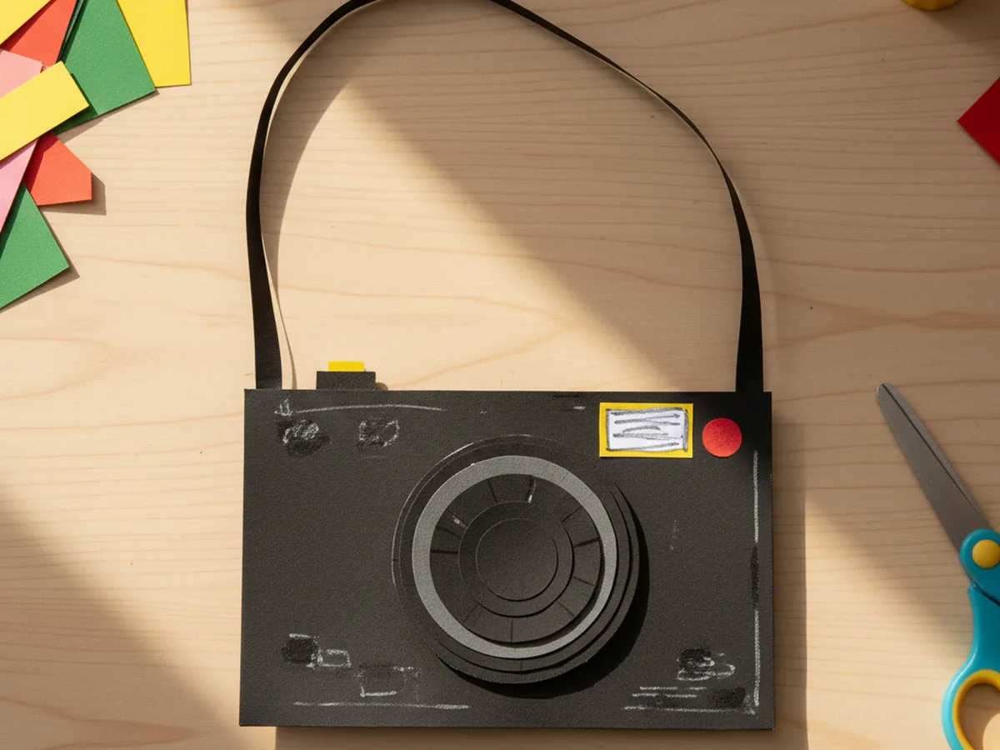
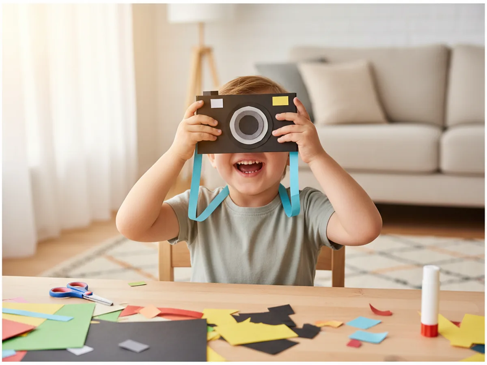

This little paper camera craft is the kind of project that turns into a whole afternoon of pretend play before the glue is even dry. You cut a small black rectangle, layer on a paper lens, add a tiny viewfinder and flash, then loop a paper strap around the neck. That is the entire build, and somehow what comes out is a cute pretend camera your child will carry around the house for days. 📸
It is perfect for kids age 4 and up, and a sweet quiet activity to do with a mom at the craft table. Younger children can help glue the shapes and decorate, while older kids can handle most of the cutting on their own. Either way, the finished camera looks adorable and instantly becomes a beloved little prop.
Why Kids Love This Craft
Kids are wired for pretend play, and a homemade camera is a magical kind of toy. The moment the lens goes on and the viewfinder appears, your child realizes they have built something they can actually use to play with. Suddenly they are taking pretend photos of the cat, the dog, the sandwich on the table, and you. That little click sound they make every time they snap a picture is one of the cutest things you will hear all week.
This paper camera craft also gently builds real skills without feeling like work. Cutting the rectangle and the round lens supports scissor practice. Lining up the small shapes on the camera body helps with hand-eye coordination. Drawing the dials and lettering with a marker is a wonderful fine motor moment. None of it feels like a worksheet because the whole project is wrapped in the joy of making a toy.
The decorating stage is where personality shows up. Some kids want sparkly stickers all over their camera, some add tiny pretend buttons, some draw their own brand name across the top. There is no wrong version, and that freedom is exactly what makes children proud of what they built. By the time the strap goes on and the camera is around their neck, they feel like a real photographer ready for a shoot.

What You'll Need
Here is everything you need to make this paper camera craft at home, with most supplies already living in your craft drawer.
- Crayola Construction Paper, 240 ct, gives you grey, yellow, white, and red scraps for every part of the camera
- Black Cardstock, 65 lb, sturdier than regular construction paper and perfect for the camera body
- Elmer's Disappearing Purple Glue Sticks, easy for little hands and dries clear so no white residue shows
- Fiskars Blunt-Tip Kids Scissors, safe for ages 4 and up and just right for these small shapes
- Crayola Broad Line Markers, for adding playful color details and a fun pretend brand name
- Sharpie Fine Point Marker, Black, makes crisp small lettering and dials look the most camera-like
- Westcott Clear Plastic Ruler, helpful for measuring the body so the rectangle stays neat
- A pencil, optional for sketching the rectangle and circles before cutting
Step-by-Step Instructions
Take this one calm step at a time and your child will have their own pretend camera in about half an hour. Let them help with every part, even if they just press the shapes flat for you.
Step 1: Cut the Camera Body
Start by cutting a rectangle from black cardstock or construction paper, about 5 inches wide and 3 inches tall. This will be the body of the paper camera craft. Use a ruler and a pencil to lightly mark the rectangle first if your child is doing the cutting. The corners do not need to be perfect, and a slightly imperfect shape gives the camera a charming handmade look.

Step 2: Glue On the Outer Lens
Cut a black paper circle about 2 inches across. The easiest way is to trace around a small jar lid, a roll of tape, or a coffee mug bottom and then cut along the line. Apply glue to the back of the circle and press it firmly onto the center of the camera body, leaving a little space at the top for the flash and viewfinder. Hold it flat for a few seconds while it sets. This first layer is the outer ring of the lens.

Step 3: Add the Inner Lens Ring
Now cut a smaller grey paper circle, about 1.25 inches across, and glue it directly on top of the black circle. This second layer creates the look of a real camera lens with depth and a visible inner ring. Center it as best you can, but a slightly off-center inner ring still looks great and very much like something a child made with love. Press the grey circle flat and let the glue grab.

Step 4: Add the Viewfinder
Cut a small white paper square about 1 inch wide for the viewfinder. Glue it to the upper right corner of the camera body, near the top edge, leaving a little black border around it so it stands out. The viewfinder is what your child will lift the camera up to when they take pretend photos, so make it just big enough that one little eye can imagine peeking through it.

Step 5: Add the Flash
Cut a bright yellow paper square, about the same size as the viewfinder, and glue it onto the upper left corner of the camera. This is the flash. The pop of yellow against the black body instantly makes your paper camera craft look more like a real camera and gives it a cheerful, playful feel. Press the square flat and check that it sits straight along the top edge.

Step 6: Decorate the Camera
Now for the playful part. Use a black fine-tip marker to draw small dial circles, tiny tick marks, and a brand-style word across the top of the camera. Your child can make up a silly camera brand name, like Bunnycam or Sparkles, and write it boldly. Glue a tiny red paper circle on top of the camera as the shutter button, since this is the part they will pretend to press to snap each photo. Let them go wild with markers here. Stickers are also welcome. ✨

Step 7: Attach the Paper Strap
Cut two thin black paper strips, each about 8 inches long. Glue one end of each strip to the back top corner of the camera, then bring the other ends together and glue or tape them in the middle to make a loop. The strap should be long enough to slip over your child's head and rest at chest level. Once the strap is secure, hand the finished camera to your child and watch them light up. They will start clicking pretend photos within seconds. 💛


Variations to Try
Polaroid Style Camera: Make the body wider and squarer, then add a slot near the bottom where pretend photos can slide out. Cut a few tiny rectangles from white paper that your child can color in and feed through the slot for instant fake photos.
Cardboard Box Camera: Swap the flat paper body for an empty small cardboard box, like a snack-size cracker box, and decorate it the same way with paper shapes. The 3D version makes the camera feel more solid and is wonderful for slightly older kids who want a sturdier toy.
Disposable Camera Look: Use bright yellow or pink paper for the body instead of black, and skip the layered lens for a flatter, more cartoon-like camera. This version is super simple and great for younger kids who want a quick win.
Final Thoughts
A paper camera craft is one of those projects that proves you do not need anything fancy to make a toy your child will treasure. A few scraps of paper, a glue stick, and 30 minutes together at the table is enough. The real win is the moment your little photographer slips the strap around their neck, lifts the camera to one eye, and starts narrating their pretend photo shoot. That is the moment that stays with you. Happy crafting, mama.
More Crafts You'll Love
If your family enjoyed making this little camera, here are two more sweet paper crafts to try next.